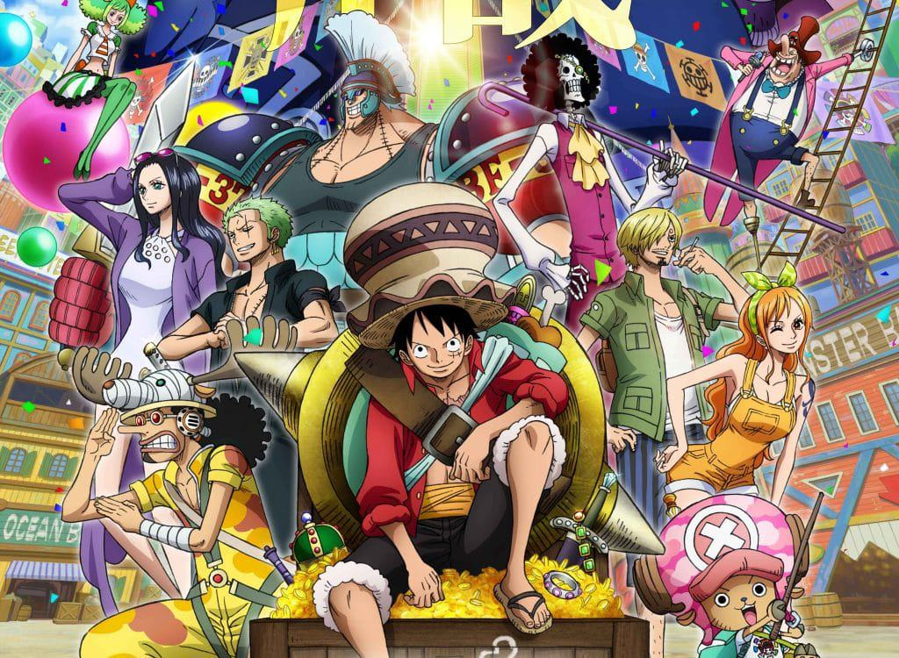

The beginning of my favorite One Piece characters showcase
This website contains some of my favorite characters from a famous
manga called One Piece

 Monkey D.Luffy is the determined and rubber-bodied protagonist of "One
Piece" on a quest to become the Pirate King and find the legendary
treasure, One Piece.
Monkey D.Luffy is the determined and rubber-bodied protagonist of "One
Piece" on a quest to become the Pirate King and find the legendary
treasure, One Piece.